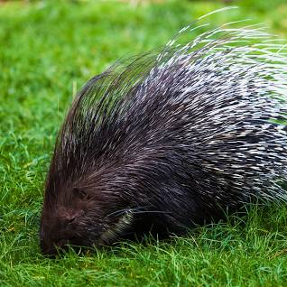

Porcupine

Porcupines are rodents known for their distinctive quills, which they use for defense.
Physical Characteristics
- Size: Porcupines vary in size, with some species being relatively small and others larger.
- Quills: They have sharp quills on their back and tail that they can raise when threatened.
- Nocturnal Adaptation: Many porcupine species are nocturnal, being more active during the night.
Behavior and Habitat
- Habitat: Porcupines are found in various habitats, including forests, grasslands, and deserts, across different continents.
- Slow Movers: They are generally slow-moving animals, relying on their quills for defense.
- Herbivorous Diet: Porcupines are herbivores and feed on a variety of plant material.
Defense Mechanism
Porcupines defend themselves by raising their quills and making their presence known to potential predators.
Interesting Facts
- Quill Mechanism: Porcupines do not shoot or throw their quills, but the quills detach easily when touched, embedding themselves in the attacker.
- Marsupial Characteristics: Opossums are marsupials, which means they carry and nurse their young in a pouch.
- Conservation Status: Some porcupine species face habitat loss and hunting pressure, leading to concerns about their populations.